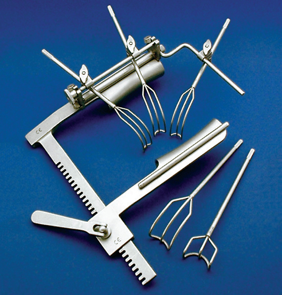

Cardiac Retractor for Mitral Valve Replacement and Repair
September 2023 - March 2024 Redesign the outdated cardiac retractor system to create a device that streamlines surgeon work flow and improves patient outcomes.
Redesign the outdated cardiac retractor system to create a device that streamlines surgeon work flow and improves patient outcomes.
Clients: Northwestern Medicine
Dr. Sandeep Bharadwaj (4th year cardiac surgery resident)
Dr. Douglas R. Johnston (Chief of Cardiac Surgery)
Skills: SoldiWorks CAD, Water jet machine techniques, design from problem, Materials selection, Design of experiment, client communications
Project Goal
The goal of this project was to update the retractor used for open heart surgery to function more effectively for mitral valve procedures using left atriotamies. The current industry standard for the procedure is the Cosgrove retractor (pictured right). Our client requested that we design a new retractor that can be setup more quickly, adjusted efficiently during the procedure, and provide a wider field of view for the lead surgeon and several assists. The project also required that the updated retractor interfaces with the current sternal retractor setup.
Design Evolution
Ring Design
 The original design concept featured a closed loop ring. The asymetric walls allowed for retraction of the superior portion of the incision while not creating bulk in other areas. The ring was made of a soft material that could be deformed during insertion but held its shape under the pressure of the heart walls. Multiple sizes were designed to allow for more flexibility.
The original design concept featured a closed loop ring. The asymetric walls allowed for retraction of the superior portion of the incision while not creating bulk in other areas. The ring was made of a soft material that could be deformed during insertion but held its shape under the pressure of the heart walls. Multiple sizes were designed to allow for more flexibility.
Spring Crescent Design
 The next iteration of the design broked the closed loop ring. This iteration drew inspiration from the cheek retractors used by dentists and othodontists. The material was a biocompatible surgical plastic that allowed for elastic deformation under the force of the hand of the surgeon but then returned to original position to hold the heart tissue open.
The next iteration of the design broked the closed loop ring. This iteration drew inspiration from the cheek retractors used by dentists and othodontists. The material was a biocompatible surgical plastic that allowed for elastic deformation under the force of the hand of the surgeon but then returned to original position to hold the heart tissue open.
Malluble Crescent Desing
The final cardiac retractor is a crescent shaped, single piece, malluble design. The malluble material allows for the position of each flap to be independently determined by deforming the central arc. Each flat is perferated to allow it to be bent by the surgeon's hand into the desired position. The asymetric design allows for the long flat to grip the cardiac tissue to lift the mitral valve intoview while reducing material bulk on the other side.
Testing
 The testing for this device was done utilizing three methods: qualitative feedback from surgeons, tissue testing with porcine hearts, and simulated heart tissue geometric testing.
The testing for this device was done utilizing three methods: qualitative feedback from surgeons, tissue testing with porcine hearts, and simulated heart tissue geometric testing.
Feedback from surgeons was taken on the feel of the material and how well the design flows in their preferred surgical approach. Testing with the porcine hearts was performed both observationally and quanitatively. To see if the device was able to hold the tissue open, the retractor was inserted to the tissue and sat for 60 seconds. Porcine tissue applies more force than human heart tissue. The retractor was also inserted and the change in distance from the mitral valve to the inscition was meassured. The devive was intended to lift the tissue and shorten this distance. A tissue box was adapted for the geometric testing done without cardiac tissue. This served soley for rapid iteration qualitiative observation.